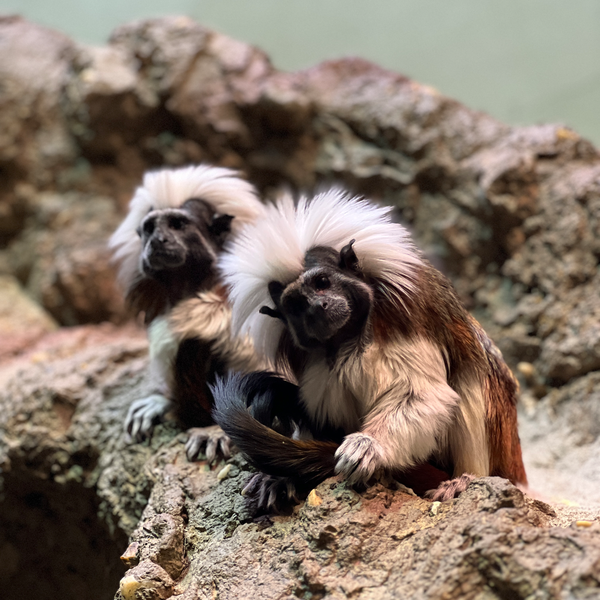
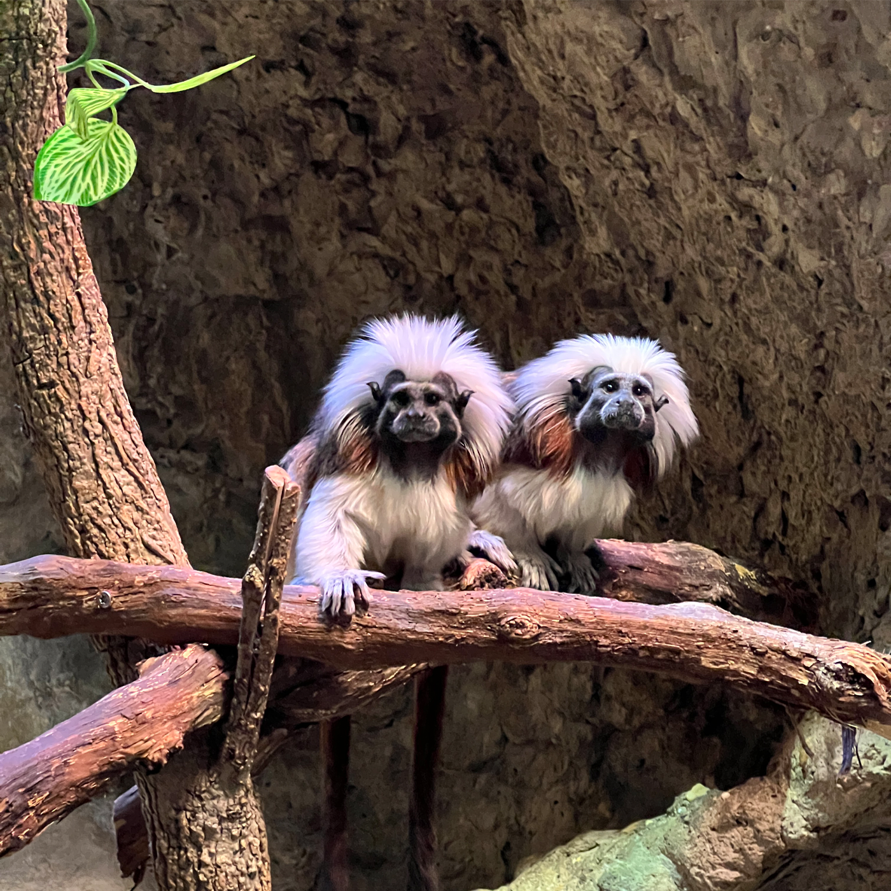

A pair of cotton-top tamarin sisters, who are 8 and 9 years old, put down roots at the Smithsonian’s National Zoo and Conservation Biology Institute this January after moving from the Ellen Trout Zoo in Texas. To celebrate their arrival, keepers are inviting the public to help select the sisters’ names.
UPDATE: The results are in! After a grand total of 5,473 votes were cast, the cotton-top tamarin sisters will officially be named...
...Toph and Suki!
 
Native to the tropical forests of Colombia, cotton-top tamarins are small, tree-dwelling monkeys. Their signature hairstyle is fashionable and functional. When on alert, these monkeys will raise the hair on their heads in an attempt to look larger.
The Small Mammal House team hopes the tamarin sisters will inspire visitors to learn more and take action to protect this critically endangered species. With fewer than 6,000 individuals left in the wild, cotton-top tamarins are threatened by habitat loss, deforestation and capture for the illegal pet trade.
With the help of people like you, the Smithsonian’s National Zoo and Conservation Biology Institute is making huge breakthroughs in animal care, science and conservation. By becoming a member or donating today, you'll help the Zoo save species.